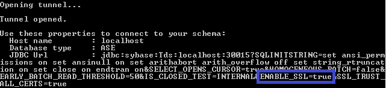

You use the Eclipse Data Tools Platform (DTP) to connect to the SAP ASE database in the
cloud. To do this, you require the connection details you obtained when you opened the
database tunnel.
Procedure
-
In Eclipse, choose .
-
Select the Database Connections node and from the
context menu choose New....
-
Select the connection profile type Sybase ASE
-
Enter a connection name, for example, New Sybase ASE,
and choose Next.
-
To define a driver, choose
 New Driver Definition.
New Driver Definition.
-
As the driver template, select Sybase JDBC Driver for Sybase ASE
15.x and enter a driver name, for example, Sybase
JDBC Driver for Sybase ASE 15.x.
-
On the JAR List tab, select the
jconn3.jar driver file.
-
Choose Edit JAR/Zip… and choose the
neo-java-web-sdk-2.<version>/repository/.archive/lib/jconn4-<version>.jar
file.
Note
Make sure you use the latest version of the SDK for Java Web Tomcat 7 runtime. You can
download the SDK from the tools page.
-
On the Properties tab, change the value for the
Driver Class property from
com.sybase.jdbc3.jdbc.SybDriver to
com.sybase.jdbc4.jdbc.SybDriver and choose
Ok.
Use the value from the current SDK version.
-
On the Connection tab, enter the required data for the
connection:
-
Host: localhost
Provide the database host name from the tunnel response.
-
Port: 30015
Provide the database port from the JDBC URL in the tunnel
response.
-
Database name: Provide the database name from the tunnel
response.
-
User name: Provide the database user that you defined when you
created the database.
-
Password: Provide the password of the database user.
-
On the Other Properties tab, enter two parameters and their
values:
-
Enter the following parameter and set it to true:
SSL_TRUST_ALL_CERTS=true.
-
Check the value of the parameter ENABLE_SSL in the
tunnel response.

If the value is set to true, enter the following on the
Other Properties tab:
ENABLE_SSL=true. If the value is set to
false or if the parameter does not appear at all in the tunnel
response, enter ENABLE_SSL=false.
-
Test the connection.
-
Choose Finish.
-
You are now connected to a remote SAP ASE database.
Next Steps
The new database connection is now shown in the Data Source
Explorer view in the database list.
 Window
Window  Show View
Show View  .
.